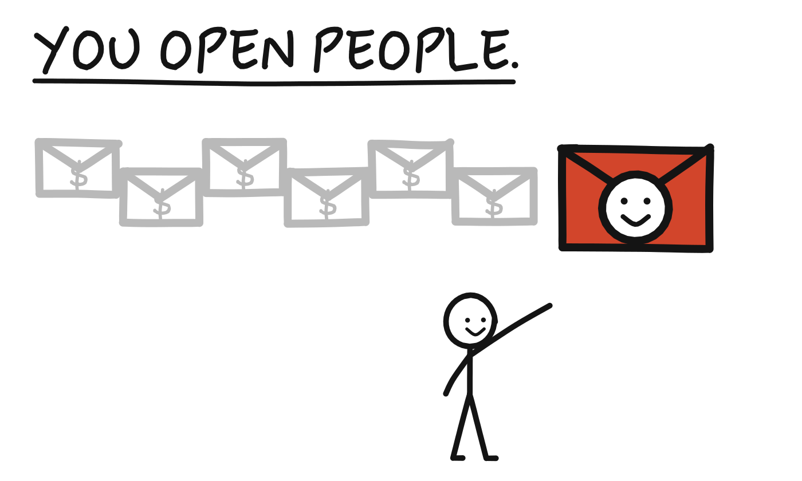
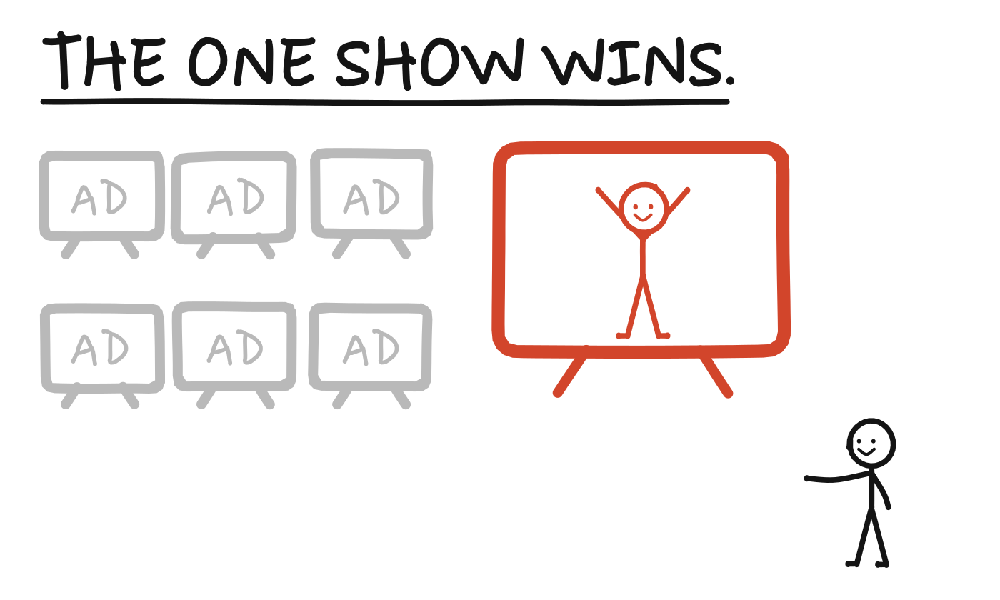
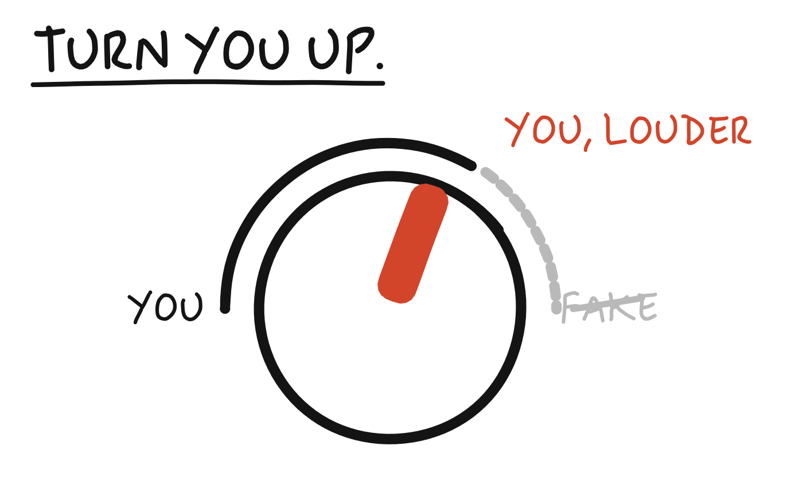
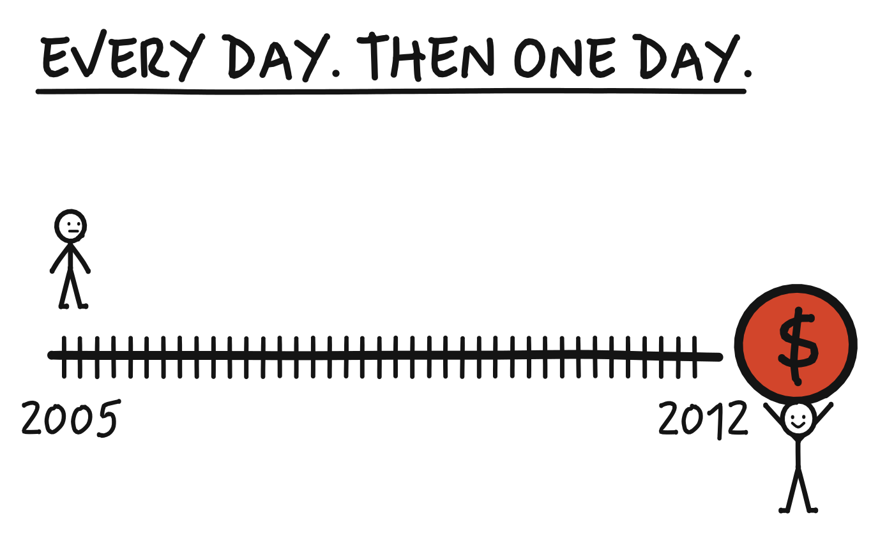
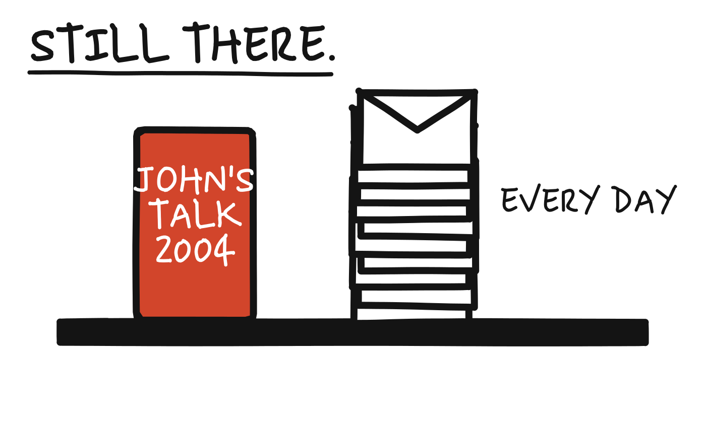

Want the whole conversation? Read the full interview with John Alanis.
My first big marketing seminar.
I was nervous about going.
Then a guy named John Alanis got up and talked about email.
Not tricks. Not subject line hacks.
Personality.
I went home and started writing my emails like a person.
The next month my business doubled. The month after that, it tripled.
$4,000 a month. Then $8,000. Then $24,000.
Somewhere in there, I wanted more of what was in John's head. So I put $10,000 on a couple of credit cards for one day with him, one on one.
Best money I ever spent.
I kept his presentation from that seminar. Years later, it was still on my bookshelf when I got him on the phone and asked him to walk through the whole idea again.
This page is that idea. Tap any of John's lines to read that part of our conversation.
If you have a list, or want one, here's the question you're probably carrying around:
"How often can I email people before they hate me?"
John's answer starts somewhere you'd never look.
Your own inbox.
About 80 emails a day move through the average inbox.*
Most of them are someone selling something.
You skip them. So do I.
But there are a few you always open.
Not because of the subject line. Not because of the offer.
Because of who sent it.

You already sort your email by who it's from, not what's in it.
John has a name for the sender you always open.
The attractive character.
Not "good looking." A person you actually want to hear from.
John sells dating advice to men. When he started, he gave himself a challenge. No partners. No list. No merchant account. Just what was in his head.
He bought a little pay-per-click traffic, got a few people to sign up, and wrote to them every single day as "The King of Let Him Come to You." A funny, overblown version of himself.
Three months in: $15,000 a month.
About eleven months in: $100,000 a month.
They were strangers. They opened because they wanted to know what the King had to say today.
Now picture the opposite.
John once signed up for an SEO newsletter. The guy was trying to give really good content.
And it was boring.
John printed the emails out to read when he couldn't sleep.
"People are more oriented toward entertainment than content." Read John's words.
Content is what you teach.
The character is why they show up to learn it.
Here's a picture I gave John on the call.
Imagine turning on your TV, and every channel is a commercial.
You'd throw the remote across the room.
Now one channel has a show on. A person you like, telling you something interesting.
Which one are you watching?

Nobody tunes in to ads. The one show gets the remote.
John: "There's no channel called the 24-hour commercial network." Read it.
About a month into his business, John figured he should give his list the weekend off.
Then an affiliate offer landed in his inbox on a Sunday.
Sunday was supposed to be a bad day to email.
He sent it anyway.
$180.
"Every time I don't email, I'm taking money out of my pocket. And I like money." Read John's words.
So here's the answer to "how often?"
People don't leave because you email a lot.
They leave when it's boring.
So the real question was never how often.
It's who shows up.
"I am my character," John says. "But in email the attributes become amplified." Read it.
You're not making someone up. You're turning yourself up.
Three dials do most of the work.
1. Rich details. What you love, where you've been, your scars. John's are the Cowboys, his military years, good whiskey. People feel like they know you, so they come back to see what you did next.
Here's the part that took the pressure off me. You don't need an exciting life. John has known the famous direct marketer Dan Kennedy a long time. Dan's readers know about the horse racing, the bankruptcy, Dean Martin's Rolls Royce. John's take: most of Dan's days are spent in his basement writing copy. The details make the life look interesting. Read it.
2. A side to stand on. John splits the world into talkers and doers. Doers take action and own their results. Talkers whine and ask for refunds. Pick your side out loud, and the right people pick it with you. The wrong ones leave on their own.
3. Words that paint. John never watched a coach's press conference until Bill Parcells coached his Dallas Cowboys. Then he never missed one. A reporter would ask something with two answers, and Parcells would say, "There's two sides to that pancake." Now look at John's own subject line: "The turd and the candy wrapper." You can't read either one without seeing it, so you remember it. Read it.

The move is volume, not a costume.
How do you know you've gone too far?
Ask yourself: would the people who know you recognize you?
Turned up. Not made up.
And it isn't a dating trick. It works anywhere people read email.
John tracks every lead by the day they joined.
One guy came onto his list in 2005.
He didn't buy a thing.
For seven years.
Then, in 2012, he bought. Read it.
John's point: something happens in a person's life that makes them ready, and you never know when. In his market, a lot of the time, it's the day a guy's girlfriend dumps him.
If you're in their inbox that day, you get the sale.
If you took that day off, you'll never know what you missed.

The day they're ready isn't yours to pick.
Pull them up.
Cover your name.
Would anyone know they came from you?
If the answer is no, it's not your fault. Most of us were taught to sound professional. Professional is how you end up in the pile of gray envelopes.
And you don't need a big list to start.
John's first email went to three people. The next one to eight. Then 26.
Everyone's scared to hit send.
I was.
Write tomorrow's email about one thing that happened to you today.
Then say what you think about it.
That's it.
The thing that happened is a rich detail.
What you think about it is your side.
That's the character, turned up one notch.
Send it tomorrow.
Then do it again the next day.
When John and I recorded this, I'd been on his list for eight years.
I'd never seen him miss a day.
And his presentation from that 2004 seminar, the one that took my business from $4,000 to $24,000 a month, was still sitting on my bookshelf.

One talk. Then an email every day.
Mine started with one talk and a couple of credit cards.
Yours can start with one email tonight.
Read the whole conversation with John. There's a lot in there I didn't fit on this page.
*About 80 a day: The Radicati Group counted 361.6 billion emails sent and received per day in 2024, across 4.48 billion email users (Email Statistics Report, 2024 to 2028).